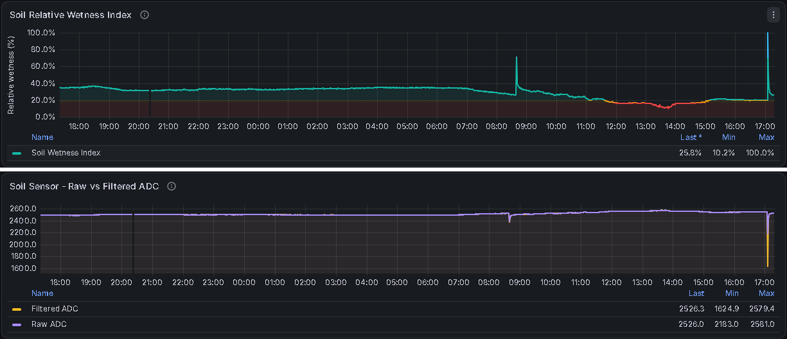
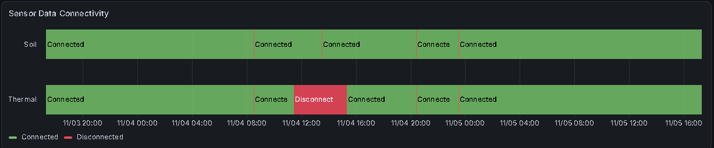

PlantCare IoT
Soil wetness and thermal exposure monitoring for a potted plant. This offline page preserves existing project screenshots for review when Grafana, InfluxDB, or the network is unavailable.
The displayed values and freshness labels belong to the original captures. They do not describe the plant's current condition. These images are evidence, not a database backup or an interactive Grafana dashboard.
Dashboard overview
The report identifies this as the 24-hour view on 5 November 2026. The saved dashboard includes the soil index, thermal maximum, reading age, experimental status labels, ADC trends, availability, an 8 × 8 thermal matrix, and historical rows.

Observed response around watering
The report notes watering around 08:30 after rain and again around 17:00 on 5 November. Wetness rises while ADC readings fall around these events. The morning view cannot separate rain from manual watering. A 100% reading is the top of the relative scale.

Historical data availability
The two-day capture shows a thermal telemetry gap around midday on 4 November while soil telemetry continues. The labels summarize gaps between received samples; they do not directly measure Wi-Fi status or identify which component failed.
